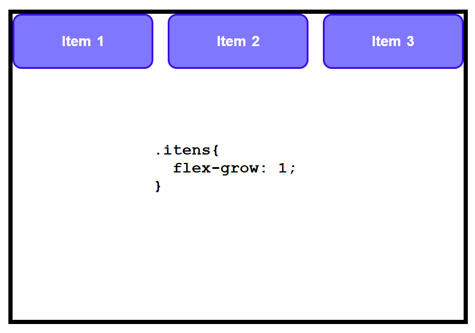

Main Axis no flex-box
Por padrão, o Main-Axis é o eixo horizontal.
Mas ele pode ser alterado para ser o eixo vertical com a propriedade flex-direction: column;
Justify Content
Alinha os itens no Main Axis
justify-content: end; alinha itens no fim do elemento pai.justify-content: center; alinha itens no centro do elemento pai.justify-content: space-between; aloca o espaço entre o itens.justify-content: space-around; aloca espaço entre itens e a borda.justify-content: space-evenly; aloca espaço igualmente entre tudo.
Align-itens
Alinha os itens no cross-axis:
aling-itens: align-itens: start; alinha no início do cross axis.aling-itens: end;: alinha no final do cross axis.aling-itens: align-itens: baseline; alinha de acordo com o texto dos itens.aling-itens: align-itens: center; alinha no centro do cross-axis.
Flex-Wrap
Por padrão os itens no flex-box tentam ficar sempre na mesma linha, esmagando uns aos outros se não houver mais espaço para todos.
Flex-Wrap; faz com que eles possam quebrar para linha debaixo quando não houver mais espaço.

Aling-Content
Quando temos um flex-wrap; a opção aling-content; é liberada.
Ou seja, a propriedade aling-content; só funciona quando os itens estão em flex-wrap: wrap;.
align-content; alinha todos os itens pelo cross-axis.
aling-content: end;aling-content: center;aling-content: space-between;aling-content: space-around;aling-content: space-envenly;aling-content: start;
Gaps
Adicionar espaço entre os elementos. gap: 1em;
Flex-grow
Propriedade aplicada diretamente no item (filho).
Permite ao item aumentar de tamanho caso haja espaço suficiente para ele.
Seu valor vai até 1:
Caso todos tenham flex-grow:1; todo espaço disponível será distribuído igualmente entre os itens.

Flex-srink
Também tem valor até 1.
Define o quanto um item encolhe em relação aos outros.
flex-srink: 5; item encolhe bem mais rápido que os outros.
flex-srink:0; item não encolhe, mesmo se alterarmos o tamanho da janela.
Flex-basis
Define o tamanho de um item antes que o espaço restante seja distribuído.
flex-basis:0; encolhe elemento ao máximo.
flex-basis:150px; permite que o item tenha 150px.
Atalho flex;
At rimeiro parâmetro é definido, os outros dois são autimaticamente setados.
Align-self
Outra propriedade de itens (filho). Vai sobrepor o valor colocado no align-itens; setado no container, mas para um item em particular.
Por exemplo, se no caintaner pai tivéssemos o align-itens: start; e no item1 a propriedade align-self: center;
Order
Alterar a ordem em que os itens aparecem. Por padrão essa ordem segue como definido no html, mas ela pode ser alterada.
O valor dessa propriedade começa em zero.
order: -1;